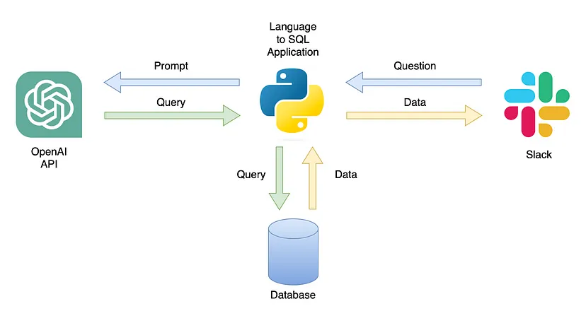

Cleaned and analyzed large-scale e-commerce datasets, resolving data corruption, missing values, and inconsistencies to assess the impact of discounts on revenue, customer satisfaction, and retention for strategic decision-making
Analyzed user data for a fintech app to optimize free-to-paid conversion strategies for financial tracking subscriptions.

Analyzed 1.6M tweets classified by sentiment (0-4) using fields like target, ID, date, flag, user, and text for sentiment analysis.

This project focuses on the analysis and optimization of website traffic using MySQL for data management. The goal is to understand, measure, and improve various aspects of web traffic and user behavior.

Built a FastAPI application with GPT integration to generate and execute SQL queries from natural language prompts, featuring an interactive UI.
Performed stock market analysis using historical data to identify trends and predict future price movements through statistical modeling and machine learning techniques.
This project aims to build a real-time fraud detection system using Apache Kafka for data ingestion and Apache Spark for data processing and machine learning.